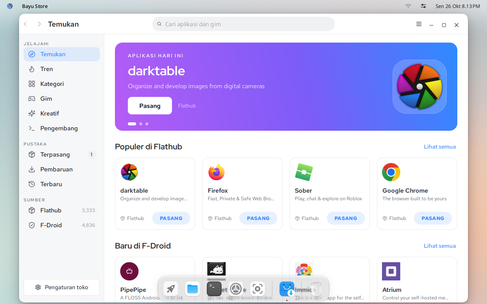
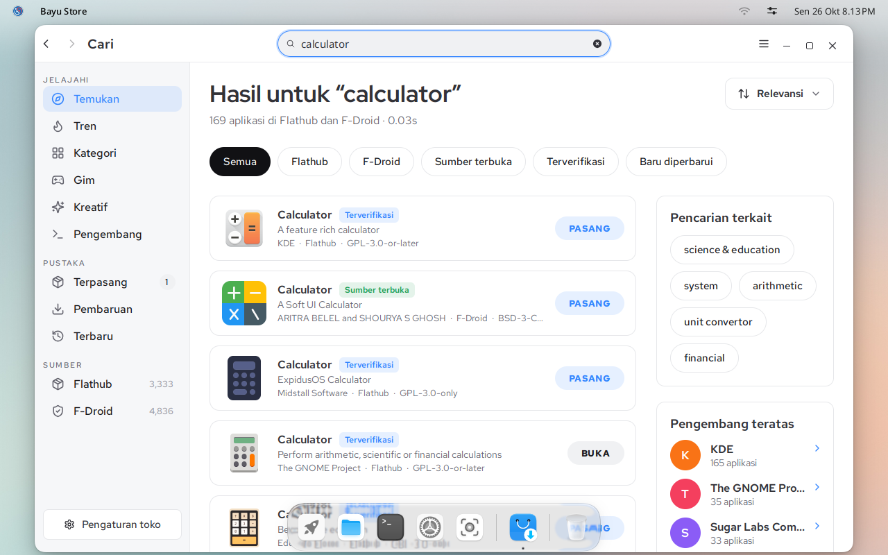
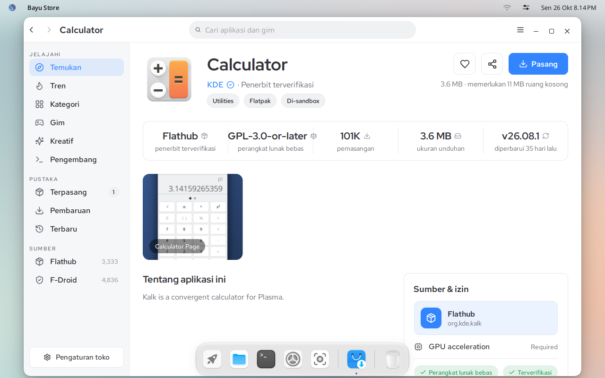

Dokumentasi IGN 26
Memasang aplikasi
Bayu Store memasang aplikasi Linux dari Flathub dan aplikasi Android dari F-Droid, dari satu kotak pencarian.
Buka Bayu Store dari peluncur. Saat pertama dibuka, Bayu Store mengunduh daftar aplikasi. Prosesnya satu sampai dua menit dan hanya sekali.


Mencari aplikasi
Ketik di kotak pencarian di atas lalu tekan Enter. Hasil dari Flathub dan F-Droid tampil bersama. Klik Flathub atau F-Droid di bawah judul untuk menampilkan salah satunya saja.


Memasang
Klik nama aplikasi untuk membuka halamannya. Di sana tertulis pembuatnya, lisensinya, ukuran unduhan, dan apa saja yang boleh diakses aplikasi itu.

Klik Pasang. Tombolnya menampilkan kemajuan pemasangan.
Jika tombolnya berubah menjadi Buka, aplikasi sudah terpasang. Klik Buka, atau cari aplikasinya di peluncur.

Aplikasi dari F-Droid adalah aplikasi Android. Saat pertama memasangnya, Anda diminta mengaktifkan Android. Lihat Aplikasi Android.
Pembaruan
Bayu Store memasang pembaruan aplikasi di latar belakang. Untuk melihat apa saja yang berubah, buka Pembaruan di bilah samping. Untuk mematikannya, buka Pengaturan toko lalu matikan Pasang pembaruan secara otomatis.
Bayu Store hanya memperbarui aplikasi. Untuk memperbarui sistemnya, jalankan sudo dnf upgrade di Terminal.
Menghapus aplikasi
Buka Terpasang di bilah samping, buka halaman aplikasinya, lalu klik tombol tempat sampah di sebelah Buka.
Berikutnya: aplikasi Android.